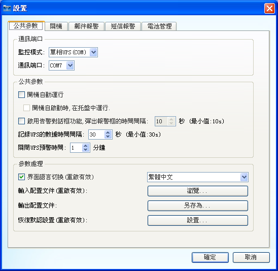
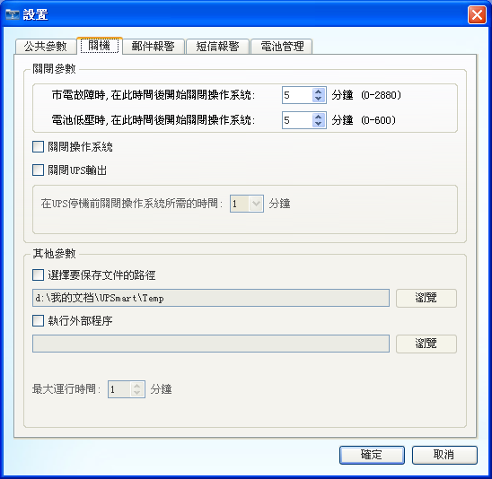
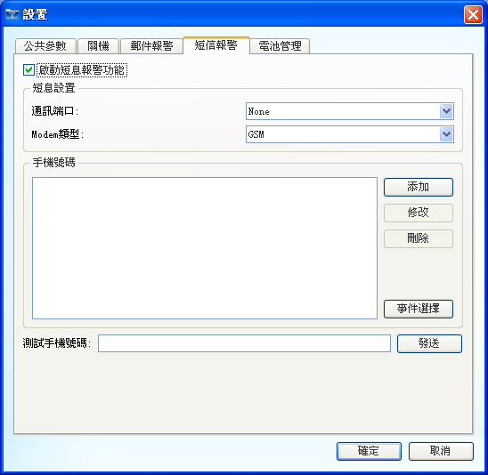
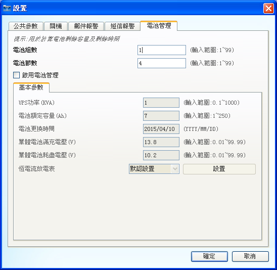

UPSmart使用手��
�O置
1. 公共����
�O置UPS的通信模式以及�O置壹些其他�c��件有�P的���怠�

�D1：公共���翟O置
2. �P�C
�O置��件�P�]操作系�y的�l件以及在�P�]操作系�y�r�M行的壹些操作，例如,保存文�n等操作。

�D2：�P�C�O置
3. ��子�]件
�O置��子�]件�缶�的功能。
�D3：��子�]件�O置
4. 短信�缶�
�O置短信�缶�的功能，本功能的���F需要外接短信模�K，否�t此功能�o法使用。

�D4：短信�缶��O置
5. ��池管理
�����]有��算��池剩余容量和剩余�r�g的UPS，此功能可以�椭�UPS��算此�身�功能。

�D5：��池管理�O置
�]：��池管理功能只能作�橐挤N�o助功能，��算�Y果�K不��完全�蚀_。